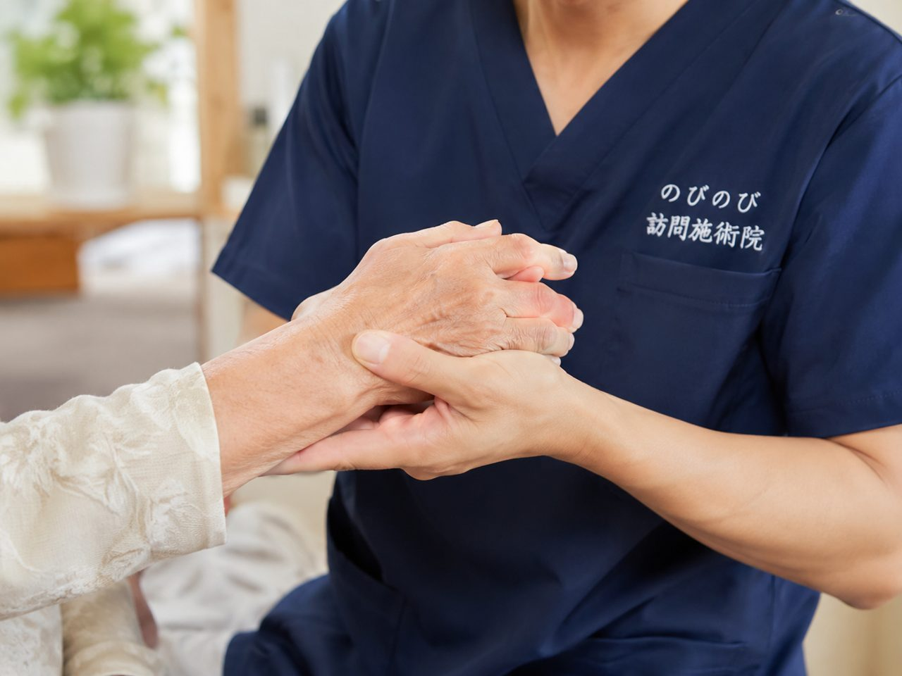
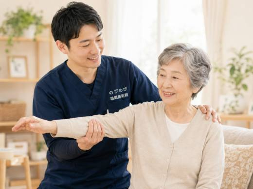
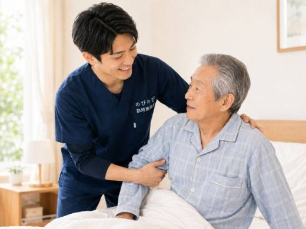
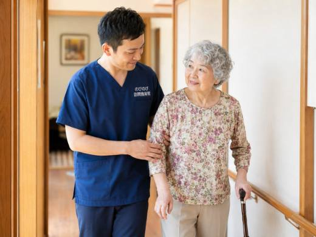
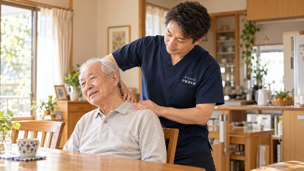
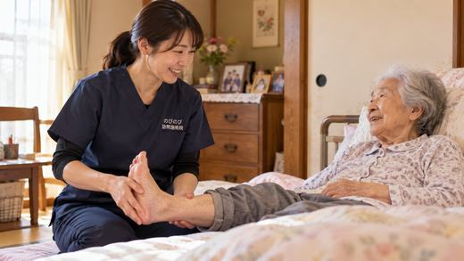

皿を洗う、雑巾をしぼる、体を支えて起こす。手首を使うたびに親指の付け根や手の甲がズキッとして、家事や介護の手が止まってしまう。そんな痛みが続くと、続けたい暮らしまで細っていきます。腱鞘炎の多くは手の使いすぎが背景にあり、休ませ方と使い方の工夫が土台です。この記事では、痛みの正体と受診の目安、負担の減らし方、そして自宅で受けられる訪問鍼灸マッサージの立ち位置を、介護するご家族にも読みやすいように整理しました。
短くまとめます。手や手首の痛み・腱鞘炎は、家事・介護・杖歩行など同じ動作のくり返しで腱や腱鞘に負担が積もって起こります。まずは手を休めることと使い方の工夫が基本で、鍼やお灸・手技はまわりのこわばりを和らげ血のめぐりを促す補助的な役割です。強い腫れや熱感、しびれ、力が入らない、変形、発熱があるときや、リウマチなどの背景が疑われるときは、先に整形外科などへ。慢性の痛みで通院がむずかしいと医師が認めれば、訪問での施術を医療保険で受けられます。自宅での1回は総額3,950円、1割負担でおよそ395円です。効果には個人差があります。
その手首の痛み、腱鞘炎かもしれません
手首は小さな骨がいくつも並び、指を動かす細い腱がすべるように通っている、こまやかな場所です。同じ動きをくり返したり、力を入れて握り続けたりすると、腱と、それを包む腱鞘というトンネルの間でこすれが起き、炎症が生じます。これが腱鞘炎です。親指側が痛むドケルバン、指の曲げ伸ばしで引っかかるばね指などがよく知られています。
サインは人それぞれですが、親指の付け根や手首が痛む、物をつまむと力が入らない、朝に固くこわばる、動かすとカクッと引っかかる、といった訴えが多く聞かれます。やっかいなのは、痛めても手を休めるわけにいかない日常のなかで、負担がリセットされないまま長引きやすいことです。
手を酷使する介護のご家族にこそ起こりやすい
手首の痛みは、ケアを受ける方だけのものではありません。体を起こす、支える、車いすへ移す、おむつを替える、食事を手伝う。介護の動作はどれも手首に力がかかり、しかも毎日くり返されます。杖や手すりを強く握って歩く方にも、同じように負担が積もります。
「自分のことは後回し」と我慢しているうちに、痛みが慢性化してしまう方は少なくありません。支える側の手首が動かなくなると、ケアそのものが立ちゆかなくなります。ご家族の手の痛みは、放っておかないでほしいサインです。まずは無理をしている動作に気づくところから始めてみてください。
強い腫れ・しびれ・変形があるときは、先に整形外科へ
鍼灸のお話をする前に、お伝えしておきたい目安があります。手首が急に赤く腫れて熱をもっている、じっとしていてもズキズキ強く痛む、手や指にしびれが広がる、力が入らずものを落とす、指や関節が変形してきた、発熱をともなう。こうしたときは、骨や神経の問題、関節リウマチなどの背景が隠れていることがあります。
リウマチのように全身に関わる病気や、早い診断が必要な状態は、鍼灸で見分けられるものではありません。当てはまる様子があれば、まずは整形外科などの医療機関を受診してください。鍼やお灸は、そうした状態が落ち着き、慢性の痛みに対して医師が必要と認めてから、補助として組み合わせるものです。
まず手首を休ませる。それが回復の土台
腱鞘炎の回復でいちばんの土台になるのは、痛む手を休ませることです。使い続けるかぎり炎症のもとが残り、なかなか引いてくれません。痛みが強いときは無理に動かさず、こまめに手を止めて休む時間をつくる。作業を一気に片づけようとせず、いくつかに分けて間をおくだけでも、負担のたまり方が変わります。
冷えると筋肉や腱がこわばりやすいので、手首を冷やさないよう気をつけるのも助けになります。サポーターやテーピングで安静を保つ方もいますが、締めつけすぎると別の不調につながることもあるため、様子を見ながら調整してください。休ませることは、遠回りに見えていちばんの近道です。
手首だけでなく、前腕や肩とつなげてみる
手首の痛みで伺うとき、確かめるのは手首だけではありません。指を動かす筋肉は前腕にあり、そこがこわばると手首の腱にも負担が回ります。ひじ、肩、首までこわばりが一続きにつながっていることもよくあります。どの動きで痛むのか、どんな作業で無理をしているのか、利き手ばかりに負担が偏っていないか。
日々の暮らしや介護の様子をうかがいながら、痛みのもとになっている手の使い方まで含めて見ていきます。痛む場所に強い刺激を加えるのではなく、まわりからゆるめて負担そのものを減らしていく。手だけでなく腕全体、体全体のバランスから読みとる進め方をしています。
鍼やお灸で、前腕のこわばりからゆるめる
鍼やお灸には、使いすぎでこわばった前腕や手首まわりの筋肉をゆるめ、血のめぐりを促して、痛みやだるさを和らげる働きが期待できます。手首の痛みは、手首そのものより、指を動かす前腕の筋肉のこわばりが影響していることが多く、そのつながりをたどって整えていきます。効果の出方には個人差があります。
手技によるマッサージや、動かしやすさを保つための機能訓練も、鍼灸に加えて組み合わせられます。これらについて別途の料金はいただきません。あくまで手を休めることと使い方の工夫が主で、施術はそれを支える補助です。痛みを消し去るものではなく、負担のかかりにくい体の状態に近づけていく、その手伝いだとお考えください。
外出できないときも、ケアの合間に家で受けられる
手首が痛むと、荷物を持って出かけること、電車のつり革につかまること、受付で書類を書くことさえ、ひとつひとつが負担になります。介護をしている方なら、そもそも家を離れる時間をつくること自体がむずかしいこともあるでしょう。家に伺う施術なら、その通院のハードルがまるごとなくなります。
住み慣れた家で、ケアの合間に落ち着いて施術を受けられます。移動に時間も体力も使わずにすむぶん、その時間をそのまま手を休めることにあてられます。国家資格をもつはり師・きゅう師が伺い、その日の手や腕の様子に合わせて進めます。
手首への負担を減らす、家事と介護の工夫
施術と合わせて、日々のちょっとした工夫も助けになります。重いものは両手で分けて持つ、雑巾は両手を使ってしぼる、握りの太い道具を選ぶ、痛いときは無理に動かさない。同じ作業を長く続けず、間に手を休める時間をはさむだけでも、たまり方が変わってきます。
介護の場面では、体を持ち上げるより滑らせて動かす、スライディングシートや手すりなどの福祉用具を上手に使うといった見直しで、手首への負担を減らせます。どんな道具が合うかは状況によって違うので、ケアマネジャーと一緒に介護動作を見直すのも、支える側の体を守るよい方法です。
気になる費用のこと
訪問での鍼灸マッサージは医療保険で計算します。ご自宅で1名が1回受けるときの総額は3,950円で、自己負担は1割の方でおよそ395円です。回数に応じた月額の目安（1割の方）は、週1回でおよそ1,580円、週2回でおよそ3,160円、週3回でおよそ4,740円ほどになります。
この費用は医療保険で計算するため、介護保険の区分支給限度額とは別枠です。ヘルパーやデイサービスの枠とは別に利用できます。別途の出張費（出張料・交通費）はかからず、エリア内はどこでも同額です。お支払いは月ごとにまとめてお願いしています。内訳はあとからでも確認できます。
「そのうち治る」と使い続けてしまう前に
手首の痛みは、「そのうち治る」と受けとめて、痛いまま使い続けてしまいがちです。けれど休められないまま酷使を重ねると、痛みが慢性化し、家事や介護そのものがつらくなっていく流れに入りやすくなります。早めに手を休め、使い方を見直すことが、その流れを止める手がかりになります。
慢性的な痛みで通院がむずかしいときは、医師が必要と認めれば保険の対象になります。施術を受けるのは、訪問先で医師の同意にもとづく方ご本人です。要介護認定がなくても、医師の同意があれば利用できます。同意書の段取りは当院でお手伝いします。支える側のご家族も、どうかご自身の体を後回しにしないでください。
よくある質問
介護をしている家族ですが、私も受けられますか？
慢性的な手首の痛みなどで医師が治療の必要を認め、通院がむずかしい状況であれば、ご家族の方でも対象になり得ます。施術を受けるのはご本人で、要介護認定がなくても医師の同意があれば利用できます。対象になるかどうかの見きわめや同意書の段取りはこちらで進めますので、まずはご相談ください。
腱鞘炎は鍼灸で治りますか？
鍼やお灸は、前腕や手首まわりのこわばりを和らげ、血のめぐりを促して痛みを軽くする補助的なケアです。回復の土台は手を休めることと使い方の工夫で、施術はそれを支える役割です。楽になる方もいますが、効果の出方には個人差があります。
費用はどのくらいかかりますか？
ご自宅で1名が1回受けるときの総額は3,950円で、自己負担は1割でおよそ395円です。回数に応じて、週2回ならひと月およそ3,160円（1割の方）といった見当になります。介護保険の限度額とは別枠で計算します。
医療機関を先に受診したほうがよいのは、どんなときですか？
強い腫れや熱感がある、しびれが広がる、力が入らない、指や関節が変形してきた、発熱をともなう、といったときは、先に整形外科などを受診してください。関節リウマチなどの背景が疑われるときも同じです。鍼灸は、それらが落ち着いてから補助として組み合わせます。
使いすぎが原因のようですが、休めば治りますか？
手を休めることは回復の土台で、負担が減れば楽になっていく方が多くいます。ただ、家事や介護で休みきれないことも多いものです。負担の少ない使い方や道具の工夫もお伝えしながら、こわばりを和らげる施術で合わせて支えていきます。
出張費や交通費は別にかかりますか？
別途の出張費（出張料・交通費）はかかりません。対応エリア内であれば、どこにお住まいでも費用は同額です。お支払いは月ごとにまとめてお願いしています。
保険を使うのに、何か手続きは必要ですか？
訪問での施術を医療保険で受けるには、医師の同意書が必要です。かかりつけの先生への確認や書類の段取りは当院で引き受けますので、負担なく進められます。まずはお困りの様子をお聞かせください。
対応しているのはどのエリアですか？
大阪府は豊中市・吹田市・茨木市・高槻市・箕面市・摂津市・池田市、大阪市は淀川区・東淀川区・都島区・北区・旭区、兵庫県は尼崎市・伊丹市にうかがっています。エリア内は出張費がかからず費用は同額です。

手首の骨折のあとのこわばり・動かしにくさでお悩みの方へ｜手を使う暮らしを取り戻すケア
続きを読む
変形性頸椎症で首の痛みや動かしにくさがある方へ｜訪問鍼灸マッサージ
続きを読む
高齢の方の足首の痛み・捻挫のあとの不安定さと在宅ケア｜訪問鍼灸マッサージ
続きを読む
首のこりから起こる頭痛（頸性頭痛）と在宅の鍼灸ケア｜訪問鍼灸マッサージ
続きを読む
首・肩のこりや腕のしびれがつらい高齢の方へ｜頸肩腕症候群と訪問鍼灸マッサージ
続きを読む